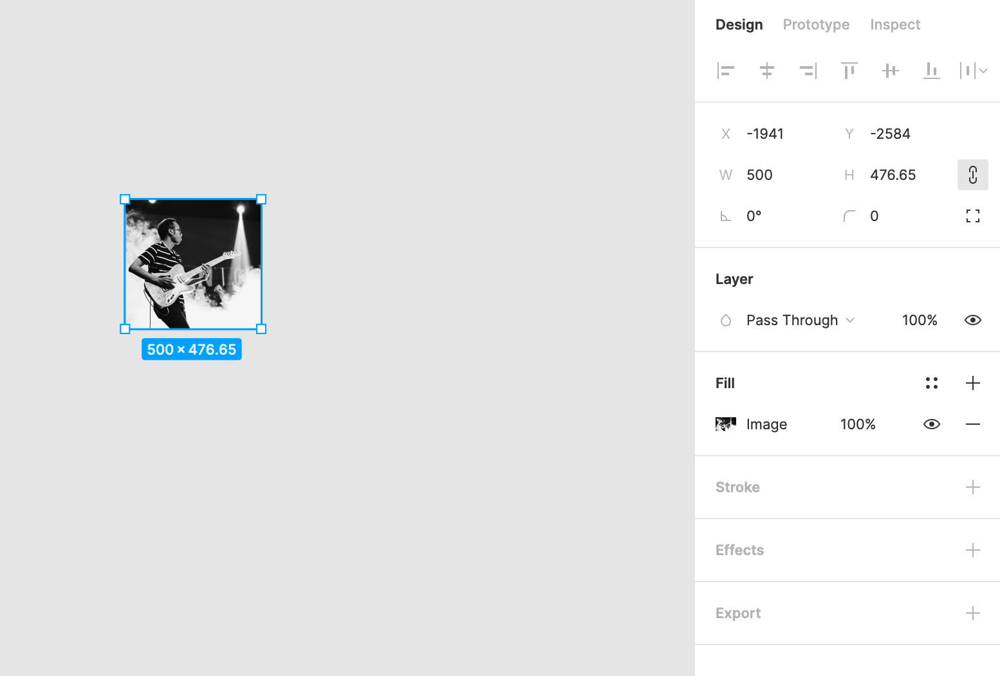
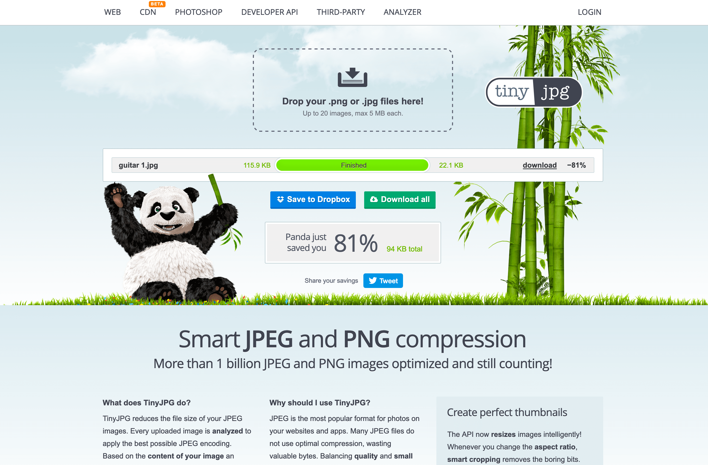

Fig 1Sign up for a free Figma account. Use your MMU student email address as Figma will always be free for student use. You can use the online version or the downloadable app (PC & Mac).Fig 2Log in to Figma and click the new file button on the main file viewer screen.Fig 3Click the 'hamburger', then choose 'File', then choose 'Place image'.Fig 4It may take a little while but a file finder box will pop up. Find your original image (use guitar.jpg) on your computer and click open.
Fig 5Your image will load into Figma but 'float' around until you click once to add the image to your canvas.
Note - You may notice the Image Resized warning - Figma say "we will downsize any Images with a width or height larger than 4096 pixels. This will scale the image's original dimensions proportionally, so the longest edge is less than 4096 pixels."Fig 6The image appears on the canvas at full size.Fig 7To see the full image, press 'Shift + 1' on the keyboard to make the image fit the screen. Check the image has a blue selection border around it as above or click on the image to select it. Fig 8Click on the crop tool. Blue crop handles will appear at the edges of the image. The image menu will appear: you can move this out of
the way by clicking and dragging on the black header bar.Fig 9Choose your crop by moving the chunky blue handles. You can move the entire crop area when the cursor changes to a four-headed arrow. Double click or press return to crop the image.Fig 10Now you can resize your image. Ensure the 'constrain proportions' chain next to the width and height is highlighted grey - it's on.

Fig 11Resize your image by typing a smaller number in the width or height box, depending on your requirements (shaded orange on the screenshot). The image should shrink once you have clicked out of the
form field.Fig 12 Zoom to 100% to see the image at its actual size.
You can redo cropping and resizing as many times as you wish: Figma keeps a copy of the original image. Always make sure your crop or resize values are smaller than the original image.Fig 13Once you are happy, it's time to export the image out of figma. Go to the export options at bottom right. As these images are photographs, change 'PNG' to 'JPG' - don't change any of the other settings. Fig 14Click the grey bordered export button (highlighted in orange) and the image will download to your computer. Fig 15Figma's export setting is quite generous with file sizes, so we can refine the image using the TinyJPG web service.

Fig 16Find your image and drag it onto the TinyJPG window. Usually TinyJPG will be able to remove a fair amount of file size. In our example from 115.9kb down to 22.1kb. Click 'download' to download the new image.Fig 17Find the compressed version of the image in your download folder. The image is now ready to move into your website folder so you can add it to your page.
Put all three files into the optimised folder.
band-400.jpg is the optimised photo from the Pixlr exercise.
guitar 1.jpg is the file cropped, resized file from the Figma exercise.
guitar-500.jpg is the Figma file futher optimised by Tiny JPG.
All of these images still retain a high level of quality but are now much quicker to download. Sometimes the image dimensions need to stay big to fit across a page - but the file can still be optimised to reduce the file size.
Note that you can also run any images already optimised in an editor through the Tiny JPG or PNG sites. Even though optimised in an editor, a little more can be 'squeezed' out of some images this way. Always check
the final file - you are always looking for that balance between file size and quality.